| Name |
Keywords(s) |
Shortcut(s) |
Symbol |
Description |
| AND |
and, nand |
|
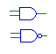 |
Outputs the logical AND of the input signals. All of the inputs
must be have either the same bit width as the output, or be single bit.
In the case of a gate with mixed multi- and single-bit inputs, the single-bit
inputs are assumed to be connected to across all bits of the multi-bit signals. |
| OR |
or, nor |
|
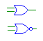 |
Outputs the logical OR of the input signals. All of the inputs
must be have either the same bit width as the output, or be single bit.
In the case of a gate with mixed multi- and single-bit inputs, the single-bit
inputs are replicated to all of the other bits. |
| XOR |
xor, xnor |
|
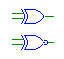 |
Outputs the logical XOR of the input signals. All of the inputs
must be have either the same bit width as the output, or be single bit.
In the case of a gate with mixed multi- and single-bit inputs, the single-bit
inputs are replicated to all of the other bits. |
| Buffer |
buf, not |
|
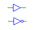 |
Buffers the input signal. If the input signal is a value other
than logic-1 or logic-0 (e.g., floating) the output will be the unknown
signal. The inputs and outputs must have the same bit width. |
| Tri-State Buffer |
bufif1, bufif0,
notif1,notif0 |
|
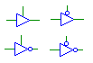 |
Outputs a buffered signal when the enable line (top) is logic-1.
Note that an inverter placed on the output of a tri-state buffer is not
equivalent to connecting the output to a separate inverter element.
With an inverted output, a logic-0 on the enable line will result in floating
output (i.e., Verilog notif behavior). The input and output must
have the same bit width, and the enable line must be single bit. |
| Reduction Gates |
and, nand,
or, nor,
xor, xnor
|
| Ctl-r a | Ctl-r A |
| Ctl-r o | Ctl-r O |
| Ctl-r x | Ctl-r X |
|
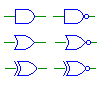 |
Outputs the logical AND of all of the bits on the input. Reduction
gates for OR and XOR are also available. The output must be single-bit. |
| Constants |
supply1, supply0 |
|
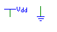 |
Outputs a logic-1 or logic-0. There are no bit-width restrictions. |
| Switch |
switch |
|
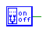 |
Outputs a single-bit logic value according to the switch setting.
Clicking on a switch while in simulation mode will toggle its state.
The output must be single-bit. |
| Dip Switch |
dip |
|
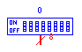 |
Outputs a multi-bit signal according to the switch setting.
Clicking on a dip switch while in simulation mode will enable a hex value
for the switch to be entered. |
| Tty |
tty |
|
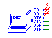 |
Tty gates can be used to model an interactive terminal. Your
circuit can send characters to be displayed on the tty, or receive
characters that were typed in the tty. See the section on ttys in
the simulator manual for details on how to use ttys.
|
| Clock |
clock |
|
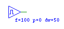 |
Outputs a clock signal with a specified pulse-width (f), phase (p),
and duty width(dw). The output must be single bit. |
| Concat |
concat |
|
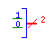 |
Combines multiple wires into a single multi-bit wire. The sum
of the bits on the left side must add up to the bit width of the right
side. The current implementation has a limitation that all signals
must flow in the same direction. That is, you must put all of the
driving gates on either the left or right. |
| Wire Tap |
n/a |
|
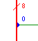 |
Pulls off a sub-range of a multi-bit wire. This gate type is not
created through the menus like most other gates, but by dropping the
end of a wire on a wire of a larger bit-width. You can use the
"Properties..." option from the "Gate" menu to select the bit range to
be extracted. This gate can only be used to "read" the value of a wire,
and cannot be used to "wire" a value on a multi-bit bus.
|
| Adder |
add |
|
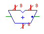 |
Outputs the sum of the inputs. The inputs must have the same
bit width as the output, and the carry-in and -out must be single bit.
The carry-in line is indicated by the dot. |
| Divider |
div |
|
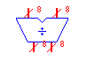 |
Outputs the quotient and remainder of the inputs. The left input
is the dividend, and the right input is the divisor. There are no
bit-width restrictions, but if the result does not fit in the supplied
bit-width, it may be truncated. |
| Multiplier |
mult |
|
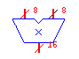 |
Outputs the product of the inputs. There are no bit-width restrictions,
but if the result does not fit in the supplied bit-width, it may be truncated. |
| Multiplexer |
mux |
|
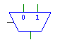 |
Outputs the input selected by the select line. The bit-width
of the inputs must match the bit-width of the output, and the bit-width
of the select line must be the ceiling of the base-2 log of the number
of input lines. |
| Decoder |
demux |
|
 |
Outputs the input selected by the select line. The bit-width
of the inputs must match the bit-width of the output, and the bit-width
of the select line must be the ceiling of the base-2 log of the number
of input lines. |
| Left Shift |
lshift |
|
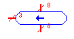 |
Performs a logical shift-left of the input. The input and output
must have the same bit width, and the bit-width of the shift select line
must be the ceiling of the base-2 log of the input/output bit-width. |
| Right Shift |
rshift |
|
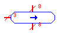 |
Performs a logical shift-right of the input. The input and output
must have the same bit width, and the bit-width of the shift select line
must be the ceiling of the base-2 log of the input/output bit-width. |
| Arithmetic Shift |
arshift |
|
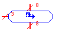 |
Performs an arithmetic shift-right of the input. The input
and output must have the same bit width, and the bit-width of the
shift select line must be the ceiling of the base-2 log of the
input/output bit-width. |
| Roll |
roll |
|
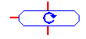 |
Rolls the input bits to the left. The input and output
must have the same bit width, and the bit-width of the shift select line
must be the ceiling of the base-2 log of the input/output bit-width. |
| Register |
register |
|
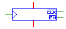 |
Outputs the current value of the register, and stores the input
value on a positive edge on the clock line. The data value is only
loaded when the active-low enable (EN) line is asserted. The register
can be cleared asynchronously with the active-low clear (CL) line.
The input and output must have the same bit width, and the clock, EN
and CL lines must be single-bit. |
| Flip-Flop |
ff |
|
 |
Outputs the current value and inverted value of the
flip-flop, and stores the input value on a positive edge on the clock
line. The data value is only loaded when the active-low enable (E)
line is asserted. The flip-flop can be cleared asynchronously with the
active-low clear (C) line. The input and output must have the same
bit width, and the clock, E and C lines must be single-bit. |
| RAM |
ram |
|
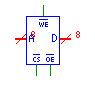 |
When the chip-select line (CS) and output enable (OE) lines are low,
the memory value addressed by the address line (A) is output to the data
line (D). When the chip select line and the write enable line
(WE) are low, the value present on the data line is stored in the memory
at the address specified by the address line. The control lines,
CS, OE, WE must be single-bit. The address and data lines must be
no more than 32 bits. RAMs can be initialized from a file at simulation
time. |
| ROM |
rom |
|
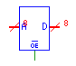 |
When the output enable line (OE) is low, the memory value addressed
by the address line (A) is output to the data line (D). The
output enable line must be single bit, and the address and data lines must
be no more than 32 bits. ROMs can be initialized from a file at simulation
time. |
| NMOS Trans. |
nmos |
|
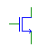 |
Implements a Verilog-style NMOS element. All signals must have
the same bit width. NMOS elements with multi-bit inputs and outputs
are treated as parallel transistors. |
| PMOS Trans. |
pmos |
|
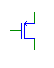 |
Implements a Verilog-style PMOS element. All signals must have
the same bit width. PMOS elements with multi-bit inputs and outputs
are treated as parallel transistors. |
| LED |
led |
|
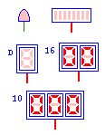 |
LED Indicator elements which can display the values of signals in your
circuit. The different types of LED are indicated by a property flag
of the basic LED circuit element. The types from upper left are: bit,
bar graph, direct, hexadecimal and decimal. The number of digits or
bars is automatically determined from the size of the input wire. For
the three types of 7-segment LEDs, the interpretation of the input
data depends on the type. For direct LEDs, each 7-bits of the input
signal directly control one segment of the LED numbered from
top-to-bottom, left-to-right. For hexadecimal LEDs, each four bit
group controls one digit. For decimal LEDs, the value of the input
signal is displayed as an unsigned decimal value.
|
| Module |
name |
|
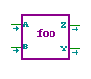 |
Implements a user-defined module. An arbitrary number of inputs,
outputs and inout ports can be used with no restrictions on bit width.
The name of the module is used in the save file and cannot be the same
as any of the built-in gates. |
| Comment |
comment |
|
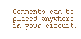 |
Comments can be used to place embed text into a circuit diagram. Comments have no effect
on the behavior of circuits. |
| Frame |
frame |
|
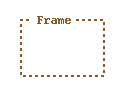 |
Frames can be used to create visual segmentation of a circuit diagram. Frames have no effect
on the behavior of circuits.
|